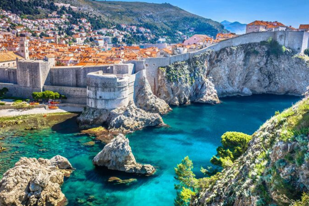

YURT DIŞI TURLARI

Vizesiz turlar, seyahat etmek isteyenler için büyük bir kolaylık sunuyor. Vize işlemleriyle uğraşmadan, sadece pasaportunuzla seyahat edebileceğiniz bu turlar, hem zaman kazandırıyor hem de tatil planlamasını daha keyifli hale getiriyor. Özellikle Türkiye vatandaşlarının vizesiz seyahat edebileceği birçok ülke, tarihi ve doğal güzellikleriyle dikkat çekiyor. Balkanlar’dan Asya’ya, Ortadoğu’dan Karayipler’e uzanan bu destinasyonlar, kültürel zenginlikleri ve eşsiz deneyimleri ile unutulmaz bir tatil fırsatı sunuyor. Vizesiz turlar, spontane seyahat planları yapmak isteyenler ve tatil sürecini karmaşık prosedürlerden uzak tutmayı tercih edenler için ideal bir seçenek!
Yurt dışı turları, farklı kültürleri tanımak, yeni yerler keşfetmek ve unutulmaz anılar biriktirmek isteyenler için eşsiz bir fırsat sunuyor. Avrupa’nın tarihi şehirlerinden Asya’nın mistik atmosferine, Amerika’nın modern cazibesinden Afrika’nın büyüleyici doğasına kadar birçok destinasyon, her türden gezginin hayallerini gerçekleştirmesine olanak tanıyor. Profesyonel rehberler eşliğinde düzenlenen turlar, hem seyahati kolaylaştırıyor hem de gidilen yerin en özel noktalarını keşfetmenizi sağlıyor. İster kısa bir hafta sonu kaçamağı ister kapsamlı bir tatil planı olsun, yurt dışı turları ile dünyayı yeniden keşfetmeye hazır olun!
Öne çıkan turlar, tatil severlerin en çok ilgi gösterdiği, popüler destinasyonları bir araya getiriyor. Tarihi ve kültürel zenginlikleriyle Yunanistan'ın büyüleyici adalarından, Japonya'nın mistik atmosferine, Balkanlar'ın doğal güzelliklerinden lezzet dolu rotalarına kadar geniş bir yelpaze sunan bu turlar, her türden gezgine hitap ediyor. Profesyonel rehberlik, keyifli programlar ve unutulmaz deneyimler içeren öne çıkan turlar, yeni yerler keşfetmek ve etkileyici anılar biriktirmek için harika bir fırsat! Seyahat planınıza ilham verecek en özel destinasyonları bu seçkide bulabilirsiniz.